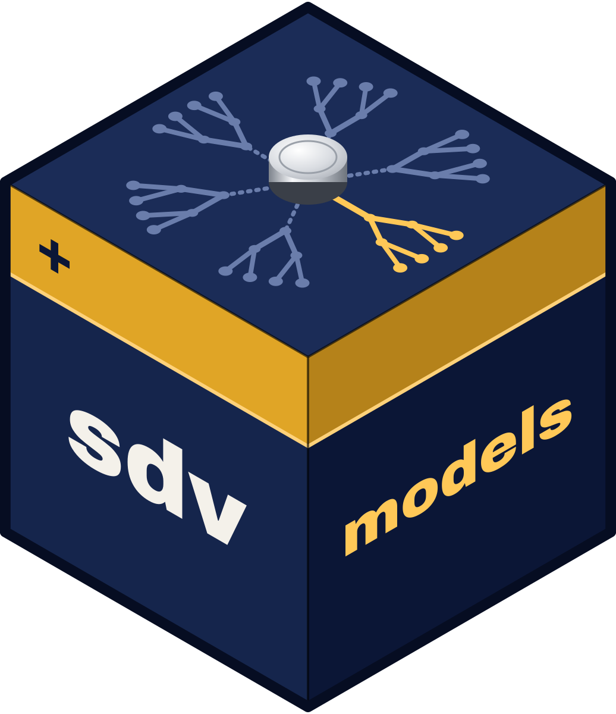

Package index
Expected points and win probability
Score a game state. Load each raw vector with xgboost::xgb.load.raw().
-
cfb_ep_model - College football expected points model
-
cfb_wp_spread_model - College football win probability model (with point spread)
-
cfb_wp_naive_model - College football win probability model (without point spread)
-
cfb_wp_ot_reach_model - College football overtime reach model
-
cfb_fg_model - College football field goal model
-
cfb_fd_model - College football fourth down conversion model
-
cfb_two_pt_model - College football two point conversion model
-
cfb_punt_distribution - College football punt distance distribution
-
cfb_field_position_ep - College football field position expected points table
-
cfb_xpass_model - College football expected pass model
-
cfb_cp_model - College football completion probability model
-
cfb_cp_air_yards_model - College football completion probability model with air yards
-
cfb_qbr_model - College football quarterback rating model
Model cards and the bundle manifest
What each model is, how it was trained, and the feature contract it expects.
-
cfb_model_cards - College football model cards
-
cfb_model_manifest - College football model bundle manifest
-
sdvmodelssdvmodels-package - sdvmodels: Models for the 'SportsDataverse' Packages